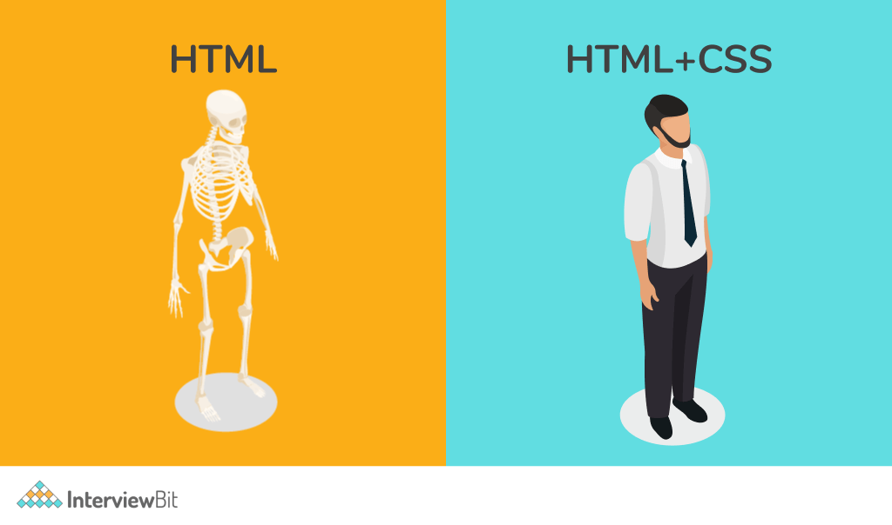

5. CSS fundamentos¶

Ahora que dominas HTML, es momento de dar vida visual a tus páginas web. CSS (Cascading Style Sheets) es el lenguaje que controla el diseño, los colores, las tipografías y todo el aspecto visual de tu sitio.
5.1 ¿Qué es CSS?¶
CSS
Es el lenguaje que define la presentación visual de documentos HTML.
Mientras HTML estructura el contenido, CSS decide cómo se ve ese contenido: colores, tamaños, espaciados, posiciones y mucho más.
La palabra "Cascading" (en cascada) se refiere a cómo se aplican los estilos: pueden venir de diferentes lugares y algunos tienen más prioridad que otros.
5.2 Propiedades CS más importantes¶
Enlace a todas las propiedades CSS
5.2.1 Colores de fuente¶
CSS ofrece múltiples formas de definir colores:
/* Nombres de colores */
color: red;
color: blue;
/* Hexadecimal */
color: #FF0000; /* rojo */
color: #333; /* gris oscuro */
/* RGB */
color: rgb(255, 0, 0);
/* RGBA (con transparencia) */
color: rgba(255, 0, 0, 0.3);
/* HSL */
color: hsl(0, 100%, 50%);
5.2.2 Colores de fondo¶
5.2.3 Tipografía¶
CSS te permite controlar completamente el aspecto del texto.
font-family: Arial, sans-serif;
font-size: 16px;
font-size: 1.2rem; /* relativo a la raíz */
font-weight: bold; /* o 400, 700, etc. */
font-style: italic;
5.2.4 Alineación y decoración¶
text-align: center;
text-align: right;
text-align: justify;
text-decoration: underline;
text-decoration: none; /* quitar subrayado de enlaces */
text-transform: uppercase;
5.2.5 Espaciado¶
line-height: 1.6; /* espaciado entre líneas */
letter-spacing: 2px; /* espaciado entre letras */
word-spacing: 5px; /* espaciado entre palabras */
5.2.6 Google Fonts¶
Enlace a tipo de letra de Google
Para usar fuentes personalizadas:
<head>
<link href="https://fonts.googleapis.com/css2?family=Roboto:wght@400;700&display=swap" rel="stylesheet">
</head>
5.3 Cómo vincular CSS¶
Cuando queremos aplicar estilo a nuestras páginas, existen tres formas de añadir CSS a tu HTML.
graph LR
A@{ shape: circle, label: "CSS" }
A --> B[1.- Código CSS inline]
A --> C[2.- Código CSS interno <br/>Dentro del archivo HTML]
A --> D[3.- Archivo <br/>.css externo]
B --> E@{ shape: circle, label: "HTML" }
C --> E
D --> E
style A fill:#e0e7ff,stroke:#4f46e5,stroke-width:2px,color:#fff
style B fill:#e0e7ff,stroke:#4f46e5,stroke-width:2px,color:#1e1b4b
style C fill:#e0e7ff,stroke:#4f46e5,stroke-width:2px,color:#1e1b4b
style D fill:#e0e7ff,stroke:#4f46e5,stroke-width:2px,color:#1e1b4b
style E fill:#f9fafb,stroke:#4f46e5,stroke-width:2px,color:#fff,font-color:#black1. CSS inline (evitar)
Por qué evitarlo: No es reutilizable, código repetitivo, difícil de mantener.
Ventaja: Solo afecta al elemento al que se aplica.
Aplicas estilos directamente en cada elemento con la etiqueta style="...":
Buena práctica
Usa siempre CSS externo en proyectos reales. Separa contenido (HTML) de presentación (CSS).
2. CSS interno
Cuándo usarlo: Páginas únicas, prototipos rápidos, estilos muy específicos.
No hace falta crear un archivo .css, los estilos se escriben en el archivo .html (dentro de la sección<head> ) entre la etiqueta <style>...</style>.
3. Archivo .css externo (recomendado)
Ventajas: Reutilizable en múltiples páginas, código organizado, fácil de mantener.
Creas un archivo .css separado y lo vinculas al archivo .html en la sección <head>:
| archivo.css | |
|---|---|
Los atributos CSS pueden escribirse en una línea o en varias, siempre que estén entre {} Aquí tienes un ejemplo de CSS en varias líneas:
5.4 Selectores CSS¶
Los selectores definen qué elementos HTML recibirán los estilos.
Selectores CSS
Los selectores son patrones que le dicen a CSS qué elementos HTML deben recibir los estilos. Son la forma de "apuntar" a los elementos que quieres estilizar.
1. Selector universal (*)
Selecciona todos los elementos (párrafos, títulos,...) de la página. Se utiliza el asterico (*)
Cuándo usarlo:
- Para resetear estilos por defecto del navegador
- Para aplicar propiedades globales a todos los elementos
2. Selector de elemento
Selecciona todos los elementos de un tipo específico.
Este párrafo será azul.
Este también será azul.
Esto NO será azul (es un título h2)
Este título será rojo (es un título h5)
Cuándo usarlo: Para aplicar estilos generales a todos los elementos del mismo tipo (todos los párrafos, todos los h1, etc.).
3. Selector de clase (.class)
Las clases se utilizan para aplicar estilos a uno o varios elementos concretos de una página.
En CSS, una clase se identifica escribiendo un punto (.) delante de su nombre.
Por ejemplo, si queremos destacar algunos elementos del documento, podemos crear una clase llamada .destacado. Este nombre puede cambiarse por otro, pero debe coincidir con el valor del atributo class en el archivo HTML.
Este párrafo está etiquetado, entonces, irá en verde y negrita.
Este NO está destacado.
Este título también está etiquetado, entonces, irá en verde y negrita.
Ventajas:
- ✅ Reutilizable: puedes aplicar la misma clase a múltiples elementos
- ✅ Funciona en cualquier tipo de elemento
- ✅ Un elemento puede tener varias clases: class="destacado importante"
Cuándo usarlo: Cuando quieres aplicar los mismos estilos a varios elementos que pueden ser de dhtmliferentes tipos.
4. Selector de ID (#id)
Permite aplicar estilos a un único elemento identificado por su atributo id. Se usa anteponiendo una almohadilla (#) al nombre del identificador.
Importante
- ⚠️ El
iddebe ser único en todo el documento HTML. - Tiene mayor prioridad que las clases al aplicar estilos.
Usos recomendados
- Para elementos únicos (por ejemplo, encabezado principal
<HEADER>o pie de página<FOOTER>). - Para anclas de navegación (
<a href="#principal">). - Con moderación, ya que las clases son más reutilizables y escalables.
5.4.1 Ejemplo práctico completo¶
/* Todos los párrafos */
p {
font-size: 18px;
}
/* Solo el elemento con id="titulo-principal" */
#titulo-principal {
color: navy;
font-size: 32px;
}
/* Todos los elementos con class="destacado" */
.destacado {
background-color: yellow;
}
/* Todos los elementos con class="importante" */
.importante {
font-weight: bold;
border-left: 4px solid red;
}
Mi Blog
Un párrafo de 18px.
Un párrafo destacado con fondo amarillo.
Otro párrafo con dos clases.
Buena práctica
- Usa clases para la mayoría de tus estilos (son reutilizables)
- Usa IDs solo para elementos únicos
- Evita el selector universal
*excepto para resets generales - Los nombres de clases e IDs deben ser descriptivos:
.boton-principalmejor que.azul
5.4.2 Combinadores¶
Los combinadores en CSS permiten seleccionar elementos en función de su relación estructural dentro del HTML. Son esenciales para aplicar estilos precisos sin necesidad de añadir más clases o IDs.
Vemos algún ejemplo típico:
1. Descendiente
Este selector usa el combinador de hijo directo (espacio), que selecciona los elementos que son hijos de otro elemento sin importar el subnivel (selecciona hijos, nietos y más profundo).
Ese selector es uno de los más comunes en CSS.
| Combinador | Sintaxis | Descripción | Ejemplo 1 | Ejemplo 2 |
|---|---|---|---|---|
| Descendiente | A B |
Selecciona todos los elementos B que estén dentro de A, sin importar el nivel. |
div p (todos los <p> dentro de un <div>) |
article p (todos los <p> dentro de un <article>) |
📘 Sintaxis de ejemplo:
Ejemplo:
<article>
<p>Este párrafo se verá en itálica (o currsiva).</p>
</article>
<p>Este párrafo está fuera del article, no se ve afectado.</p>
💡 Claves:
- El espacio entre
articleypindica la relación “en cualquier nivel dentro de”. - Es útil para aplicar estilos globales dentro de una sección sin tener que añadir clases adicionales.
- Evita abusar de combinaciones muy profundas (
article section div p) porque ralentizan el renderizado y complican el mantenimiento.
2. Hijo directo
Este selector usa el combinador de hijo directo (>), que selecciona únicamente los elementos que son hijos inmediatos de otro elemento (no nietos ni más profundos).
| Combinador | Sintaxis | Descripción | Ejemplo 1 | Ejemplo 2 |
|---|---|---|---|---|
| Hijo directo | A > B |
Selecciona los elementos B que son hijos inmediatos de A. |
div > p (solo los <p> directamente dentro de un <div>) |
section > h2 (solo los <h2> directamente dentro de un <section>) |
📘 Sintaxis de ejemplo:
Ejemplo:
<section>
<h2>Este título es hijo directo del div (azul).</h2>
<article>
<p>Este título está dentro de un article, no directamente de section, no se ve afectado.</p>
</article>
</section>
💡 Claves:
- El símbolo
>indica que la relación debe ser directa: el elementoBdebe estar justo dentro deA. - Es útil cuando quieres aplicar estilos solo al primer nivel dentro de un contenedor.
- Si usas
A B, se aplicará también a nietos y descendientes más profundos; si usasA > B, solo a los hijos inmediatos.
Perfecto 👌 Aquí tienes la explicación del combinador de hermano siguiente (+) siguiendo exactamente el mismo formato:
3. Hermano siguiente
Este selector usa el combinador de hermano siguiente (+), que selecciona un elemento que está justo después de otro en el mismo nivel (es decir, comparten el mismo padre).
| Combinador | Sintaxis | Descripción | Ejemplo 1 | Ejemplo 2 |
|---|---|---|---|---|
| Hermano siguiente | A + B |
Selecciona el elemento B que aparece inmediatamente después de A, compartiendo el mismo elemento padre. |
h2 + p (el primer <p> justo después de un <h2>) |
label + input (el <input> que sigue justo a un <label>) |
Sintaxis de ejemplo:
📘 Ejemplo:
<h2>Título</h2>
<p>Este párrafo se pondrá verde (va justo después del h2).</p>
<p>Este párrafo no se verá afectado.</p>
💡 Claves:
- El combinador
+solo afecta al primer elemento inmediatamente siguiente que cumpla la condición. - Ambos elementos deben tener el mismo padre en el árbol del documento.
- Es útil para aplicar estilos a elementos que siempre van pegados a otro tipo de elemento, como un párrafo después de un título o un campo de entrada tras una etiqueta.
Perfecto 😄 Aquí tienes la explicación del combinador de hermano general (~) siguiendo el mismo formato que los anteriores:
4. Hermano general
Este selector usa el combinador de hermano general (~), que selecciona todos los elementos que están después de otro en el mismo nivel (es decir, que comparten el mismo padre), no solo el primero.
| Combinador | Sintaxis | Descripción | Ejemplo 1 | Ejemplo 2 |
|---|---|---|---|---|
| Hermano general | A ~ B |
Selecciona todos los elementos B que aparecen después de A en el mismo nivel jerárquico (hermanos). |
h2 ~ p (todos los <p> que siguen a un <h2>) |
input ~ label (todas las etiquetas <label> que vienen después de un <input>) |
Sintaxis de ejemplo:
📘 Ejemplo:
<h2>Título principal</h2>
<p>Este párrafo será naranja.</p>
<p>Este también, porque está después del h2.</p>
<div>
<p>Este no, porque está dentro de otro contenedor.</p>
</div>
💡 Claves:
- El combinador
~aplica el estilo a todos los elementos hermanos posteriores, no solo al primero como ocurre con+. - Los elementos deben tener el mismo padre, pero pueden estar separados por otros elementos.
- Es útil cuando quieres afectar a varios elementos relacionados que vienen después de otro específico, como todos los párrafos tras un título o varias alertas consecutivas tras un aviso.